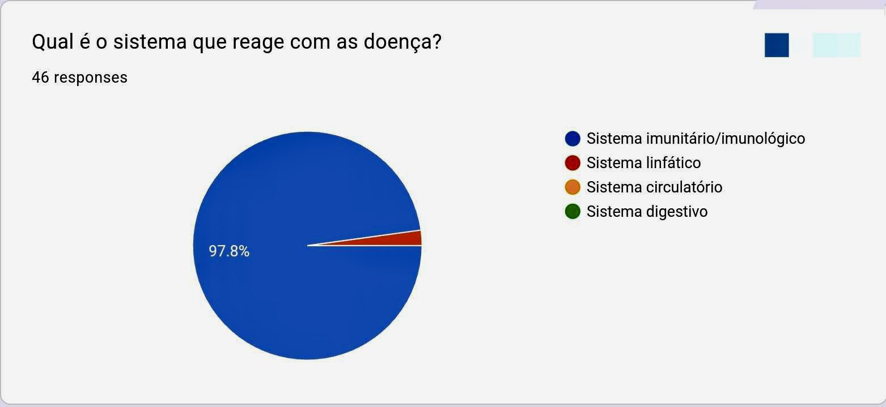
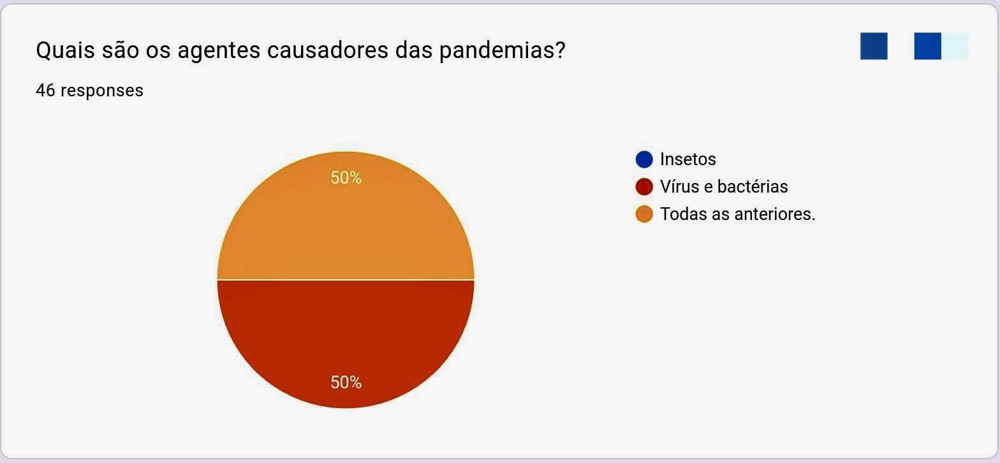
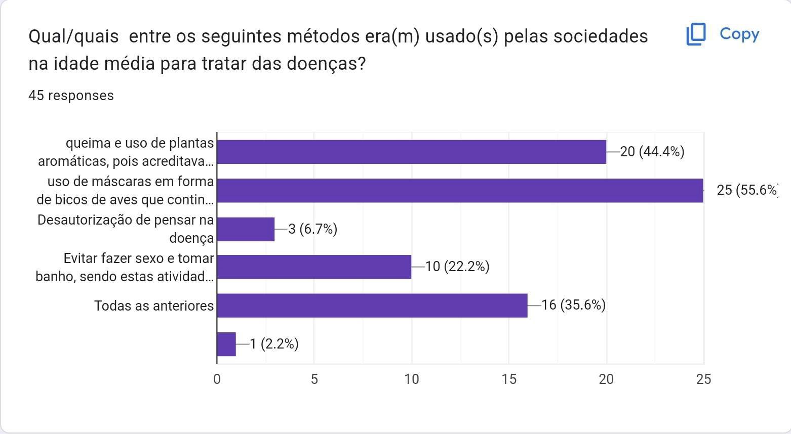
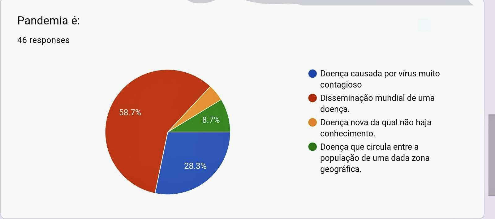
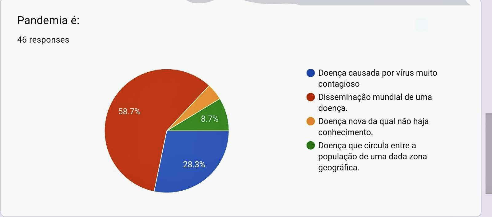
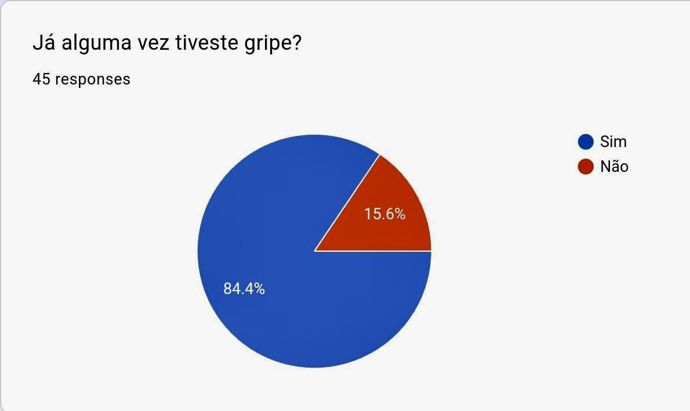

Inquêritos
Conhecimento Geral
   

Através de uma análise realizada aos inquéritos, é possível perceber que, embora não seja a um nível preocupante, há uma acentuada falta de conhecimento generalizado nesta área. Tendo em conta que houve uma grande percentagem de respostas erradas no âmbito do conhecimento geral sobre a imunologia e doenças. Antes de realizar os inquéritos, já eram esperados estes resultados, por não ser um tema muito averiguado no nosso quotidiano, estando num país com um sistema de saúde atualizado e um ambiente que impede a propagação de doenças exóticas.
Experiências Individuais
Experiências pessoais (alunos portugueses):
Foi possível observar um contraste entre os alunos de nacionalidade portuguesa e os alunos estrangeiros, sendo que a grande maioria dos alunos portugueses nunca apanharam nenhuma doença exótica e, grande parte, a doença que mais o afetou foi gripe ou covid. Ao passo que nos alunos estrangeiros, grande parte da população em estudo já teve algum tipo de doença exótica, como a dengue.
Estrangeiros
Ao analisar as viagens para o estrangiro, nomeadamente países exóticos, é possível notar que a maioria das pessoas tiveram que tomar medidas preventivas antes de se deslocar, como ser vacinado contra doenças típicas do país, tomar medicação para o mesmo propósito ou aplicar spray repelente de mosquitos. Já os alunos estrangeiros que se deslocaram para Portugal não tiveram que tomar tantas precauções, apenas algumas vacinas, em alguns casos. No entanto, praticamente todos revelam que obtiveram um choque imunitário, tendo sido reportados casos de choques térmicos, alergias e enfraquecimento imunitário.